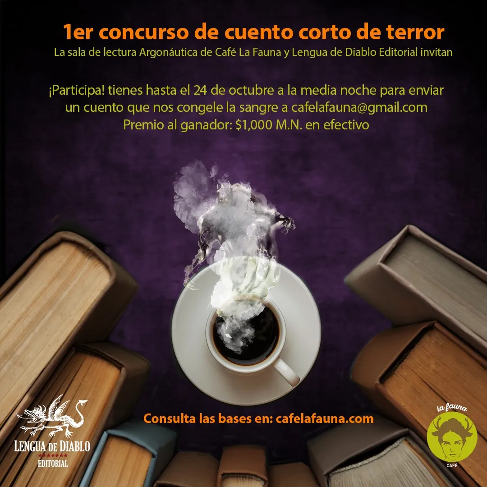

Registro Sonoro y Otros Cuentos de Terror (La Elección del Lector)

Elegir un cuento ganador en un concurso es una tarea complicada. El jurado debe seleccionar el cuento que, a su criterio, sea el mejor para recibir el premio. Eso significa elegir entre otras buenas historias. Tomando en cuenta que los lectores pueden tener otra opinión, creamos esta sección en la que lectores asiduos de Argonáutica, la sala de lectura de Café La Fauna, elige un cuento distinto al ganador como “la elección del lector”. Este primer concurso corresponde al cuento “Bullicio” de Lorenza González Ortega.
El cuento fue seleccionado por Mar Villanueva Arteaga, lectora asidua y siempre bienvenida visitante de Argonáutica.
En palabras de Mar:
“Hubo tres ganadores esta vez, ninguno mejor que el otro, y la verdad si quiero que los tres sean él número uno, pero para todo concurso, hay un ganador. Mi primer prospecto a ganador estaba aventajando por el lado sentimental, hablo de “La milpa” en el que las descripciones del campo, de lo que hace la madre, o lo que pasa con el protagonista, comparten una fuerte semejanza con lo que de niña viví con mi abuelita, que quitando el lado tenebroso del cuento, fueron momentos de felicidad y mucho aprendizaje.
La segunda propuesta a ganador, “Anastasia”, me hizo dudar un poco de mi decisión final, pues comienza intrigándote de una manera en que piensas que lo que hace el protagonista es lo más coherente, correcto, lo que se espera que un hombre en su máxima expresión debe de hacer, entonces hay algo que interrumpe lo que está bien, lo coherente, lo correcto, y su obsesión o su propósito en la vida se empieza a transformar, a retorcer, lo que provoca una atmósfera que cierra el cuento de una manera incómoda, que sientes que se puede volver “entendible”, no sé explicarlo y es eso lo que ayudó a por fin, decidirme por el cuento ganador.
“Bullicio”, aunque con una trama más directa y menos mística o mágica, tiene una narrativa que a manera de diario describe la incógnita de cómo es vivir en una casa que aparentemente ya no es tuya, un perro que no sabes si existe, existió o no, o un gato que a veces va a la casa, y otras que no, o si la gente que vive cerca de ella es real o no.
También es una narrativa íntima que te invita a compartir la idea desconocida de lo solitaria y aislada que puede llegar a ser la muerte; la autora se aventura a describir la memoria del alma libre del cuerpo en el plano de los vivos: de una casa que tiene de inquilinos los recuerdos de una madre, de sus mascotas, o de sus hijos… de un recuerdo sin vida. Por eso es que para mi, Bullicio es el ganador, porque es una mezcla entre la agonía del alma, los recuerdos de los seres queridos, y una especie de viaje desde la muerte al olvido.”
Te invito a leerlo:
Bullicio
Lorenza González Ortega
Te diriges a la puerta para abrirle y que entre. Ya no la escuchas, si algo llamó su atención, ya se fue. Abres con cautela, la llamas, no contesta ni viene. Estiras el brazo con la pequeña veladora que apenas alumbra, esperas verla en algún sitio, nada. Alguien se la llevó. Pero es grande, no hay manera de sacarla sin un escándalo. Oyes campanillas; volteas alarmada, empujas la puerta y las llaves se mueven, suenan parecido, intentas igualar los dos sonidos: no puede ser otra cosa.
La perra no está en el jardín. Le gritas. De nuevo las campanillas. Resistes a creer que no sean las llaves mientras las escuchas dentro de la casa… Eres tú la que mueve la puerta y son las llaves las que se mecen. Ves a tu perra adentro, mueve la cola, se acerca. ¿Cómo entró? Está aquí ahora, contigo; un ser vivo perro. Cierras la puerta. Tembló hace dos días, así empezó todo, las cosas están cambiando sutilmente y suceden otras que aún no me explico. No lo he pensado mucho, estoy acostumbrada a dejar pasar y a lo que sigue. Pero después de lo de ayer, comienzo a creer que alguien me está jugando una broma: me estará observando de cerca, acechando mis movimientos. Seguro le dio de comer a mi perra, por eso dejó de ladrar, y entre la oscuridad y la veladora, Oksana, silenciosa, entró a la casa. Al amanecer, cuando salí del cuarto noté algo distinto. Las cosas que se dejan en la barra de la cocina pueden ser tan variadas cada día que no cobran importancia. Pero hay algo… un color, un volumen un poco más grande de lo normal. Tomo la tetera, la lleno de agua y al colocarla en la estufa, en ese momento, parada ahí, prendiendo la hornilla, mis ojos ya no pueden dejar de percibir ese bulto. Sé que eso no es normal, que no me pertenece, yo no lo puse allí. Vivir sola no es lo más raro en estos tiempos, las mujeres de mi edad, la mayoría, estamos divorciadas; los hijos no están y el ex marido no nos importa. Me acostumbré a resolver como muchas, pero ahora había algo que cambiaba y no sabía por qué. Era como si alguien transitara por los espacios de mi casa en momentos distintos a los míos, no coincidiamos, pero algo había que me hacía saber que ya no estaba sola, que algo ocupaba mi casa, a mi perra y mi jardín. La única que no se daba cuenta era mi gata. Cosa rara, cuando siempre ven lo que nosotras no vemos. A mi gata no le importaba nada que no fuera la hora de servirle la comida.
Sentada en el sillón del estudio escucho una musiquilla, alcanzo a ver el jardín por uno de los ventanales. Vivo en las faldas de una montaña, tengo pocos vecinos; una detrás de mí, también sola, otros delante mío, yo estoy en medio. Enfrente, pasando la calle empedrada comienza el prado que se extiende hacia el monte; sembradíos de maíz y de flores de cempasúchil cuando es temporada y la vereda para los borregos que pasan cada mañana. Más abajo mis vecinos alemanes encerrados en sus casas tipo chalet, rodeadas de barda de piedra, cámaras, y mucho jardín. Eso y el camino que baja al pueblo. Las casas son grandes, no nos enteramos de nada, aislados, cada quien en su cubil como animales refugiados. La música salía de la nada, creció en volumen por un rato, cerré la ventana y se detuvo.
El día del temblor estaba recostada en la cama leyendo, creí que mi perra movía la cama al rascarse, pero ella no duerme dentro de mi habitación se queda en el pasillo, en su cojín. Pero ahora la cama se mueve, la perra rascándose… eso lo sé después del desconcierto de unos segundos, esas cosas conocidas; ella está afuera, tras la puerta, debe estar dormida. No hace calor, el frío lo ha dominado todo, la niebla se dispersa ya tarde.
Cuando abres la puerta para alimentar a tu perra y que salga al jardín ya amaneció, es tanto el silencio que no se escucha nada, ni aves o algún animal silvestre. Percibes movimiento junto a la barda de la casa, como una ola que cruzara silenciosa por todo el perímetro. Te acercas y ves a los borregos camino de ida al pastizal, parecen flotar entre la niebla; ningún balido delata que estén vivos. Mi gata negra, Petronil, la que se mete entre mis pies cuando apago todo para ir a dormir, ya no está; ha desaparecido. En las mañanas abro la puerta de su cuarto, el que era de mi hijo, y le coloco croquetas y agua fresca; es muy exigente. Maulla como demonio, me hace levantar a la fuerza, no hay manera de no hacerle caso. Hoy no la escuché, el silencio me hizo despertar. Temí abrir la puerta y encontrar su cadáver tieso sobre el colchón donde duerme. Cuando me di cuenta de que no era mi perra la que movía la cama, me incorporé y mis sentidos se alertaron. Percibí un ronroneo profundo debajo del piso, un olor a quemado, como a podrido, y olvidé el frío. Afuera se oía ruido de bicicletas, algo mecánico que daba vueltas chocando metal con metal, de pronto se detuvo. Salí de prisa al jardín, serían las nueve de la noche apenas. Los árboles se movían como si fuera el viento el que lo hiciera, mi perra corría ladrando de un lado a otro, no sentía nada, dudé que fuera un temblor, veía que todo se duplicaba, como si estuviera drogada. Las cosas se movían a destiempo; el árbol que se sale del mismo árbol y en su movimiento ondulatorio se deja a sí mismo atrás alcanzarse unos segundos después. Grité a la vecina ¡Hilda! Creí que estaría afuera, en su jardín, como yo. No había nadie alrededor. Después llegaron las voces. De madrugada al inicio, eran confusas. Afuera de la ventana veías sombras que se alargaban como si un auto con luces altas pasara por la calle y proyectara a una muchedumbre en las cortinas. No podías moverte. Creer que era un sueño no pasó por tu mente, tu cuerpo estaba despierto, lo sabías, oías los gruñidos de la perra, los rasguños en la puerta y de pronto, lejano pero fuerte, el maullido de tu gata.
Cuando todo se esfumó; pudiste moverte, levantarte a la puerta, abrirle a tu perra. Temerosa te acercaste meditando si debías hacerlo, abrir la cortina, si podrías con eso, con lo que encontrarías. Creo que he muerto. Cada día se repite lo mismo, se supone que debía de ir a trabajar, a comprar despensa, pero no salgo de mi casa, no lo entiendo. Pero no es lo mismo exactamente, hay algo que ha cambiado, suceden cosas sin explicación y mi gata ya no está; seguro tuvo que irse, ya no la podía alimentar. Por eso pienso que he muerto. Te has enterado de algo terrible, el vecino tocó en tu casa, dijo que había encontrado a tu gata, mutilada, en el camino al pueblo, aún viva. Es veterinario, dijo, eso es extraño, pudo haber sido él quien lo hizo. Quizás es el que alimentó a la perra aquel día para silenciarla y después espiarte. Te pide que vayas a recogerla, él la ha curado, la ha cosido o algo parecido, no quieres verla, te horroriza pensarla sin patas. No sé si lo he soñado, ¿cómo sabía que era mía? Estoy en el sillón del estudio, el libro que leía en el piso, está oscuro. Pienso en mi perra, corro hacia la puerta, pero oigo la musiquilla de nuevo. No quiero abrir. Voy a la cocina, busco las velas, los cerillos… Algo cruza por mis piernas, me hace caer. Escucho el bullicio, sé que hay alguien dentro de la casa, hablan, no comprendo lo que dicen. Esto no es bueno: no puedo abrir los ojos. Creo que estoy muerta.
La Lectora:
Soy Victoria del Mar Villanueva Arteaga. Vivo en Morelos. Desde la secundaria me enamore de la literatura; en mi familia existe la leyenda de que me gustaba combatir mi soledad con cuentos de caballería, y que me faltaba poco para quedar como el Quijote, ojalá ser tan libre como él. Ya en serio, gracias a mi madre y a Dios, logré llegar a la Universidad Autónoma del Estado de Morelos y titularme como docente. En mis tiempos libres disfruto de caminatas matutinas, me gusta mucho el cine y el teatro, adoro tomar un poco de café por las tardes, disfruto ir a museos un domingo por la tarde o cada que haya una nueva exposición, eso sí, me mantengo alejada del arte contemporáneo. Mis géneros literarios favoritos son: El narrativo, el dramático y a veces el lírico. Actualmente soy trabajadora de la salud, y estoy ahorrando para cursar una maestría en educación.
Realizamos el concurso en conjunto con Lengua de Diablo, editorial independiente que publica textos fantásticos, de ciencia ficción y, por supuesto, de terror.

Descarga la publicación con cuentos seleccionados y ganador del concurso aquí:
lenguadediablo.com/registro-sonoro
Visita Café La Fauna y encuentra comida, café y libros.